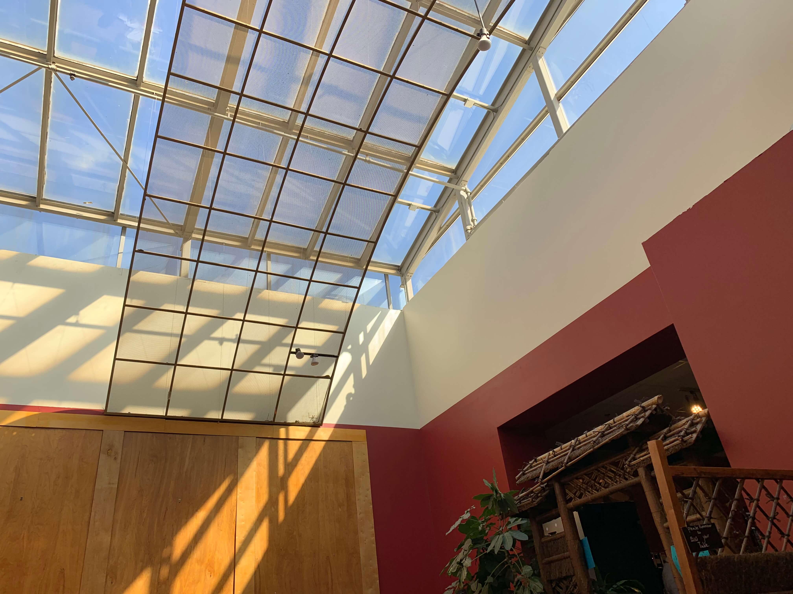

9:00 AMWhen I woke up in the morning, the dog lie down on the floor next to the bed.
Who's name is Sparky.
10:00 AMMy friend drove us to the Colorado Springs. Our destination was "pikes park" which is the
national park in Colorado.
11:00 AM
I was impressed by the landscape I saw during the driving. The moutains were all around the
Colorado.
12:00 PMI took a bus tour and passed the Garden of the Gods park, which is famous national park in Colorado.
There are a lot of beautiful red rocks. We didn’t have chance to get off the bus and take a close look but I
saw the famous rock called kissing camels.
Bus driver who was very knowledgeable explained us why they called by that name. The top part of the
rock
looks like two camels are kissing so they called kissing camel. The kissing camel is located at the very top
of North Gateway Rock so we could easily see it.
1:00 PMI was surprised that there were still snow at the top of the mountains. Because of the weather
problem, we could not go higher but it was enough to see this beautiful view.
Me and my friend took a lot of picture and have a lot of snow on the surface, my friend could do
snow angel
on the snow. I really love this experience because this was the first time I have been to the mountain in
U.S.
Afternoon
2:00 PMAfter we finished the bus tour, we went to boulder which is not that big city as Denver but
where my friend loved to go when she went to high school. The weather was so nice, so we could enjoy
walking the street.
3:00 PMWe found a teahouse while I was walking down the street. They sold a wide variety of tea. We
could try different kinds of tea for free.

4:00 PMWe found a teahouse while I was walking down the street. They sold a wide variety of tea. We
could try different kinds of tea for free.
5:00 PMWatching sunset in Colorado was one of my most beautiful memory in my life. The vast plain allowed
me to enjoy the sunset.
6:00 PMNight came to Colorado. My friend drove her car to come back home.
7:00 PM The view I saw during drive feels awkward because the street in baltimore is
busy but street of Colorado was sequestered.
8:00 PM When I got out of the car, I felt fresh and cold air. The sky was full of
stars which is hard to see in the city. It was really beautiful.
Food
My friend took me her favorite pizza restaurant "Lucky pie". I ordered
prosciutto pizza. It
was
awesome.
This place is also one of my friend's favorite restaurant, "Lark Burger". I ate famous
menu, truffle burger and truffle fries.